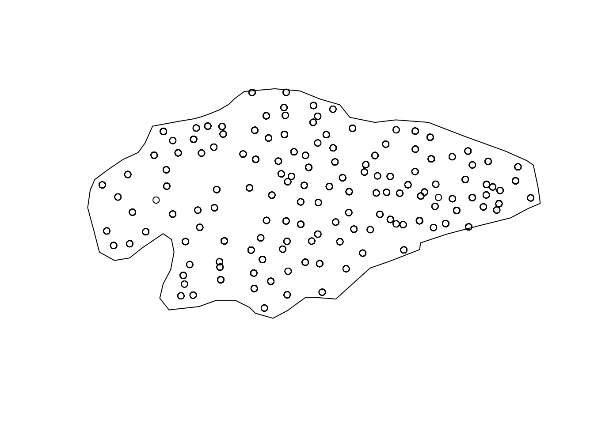
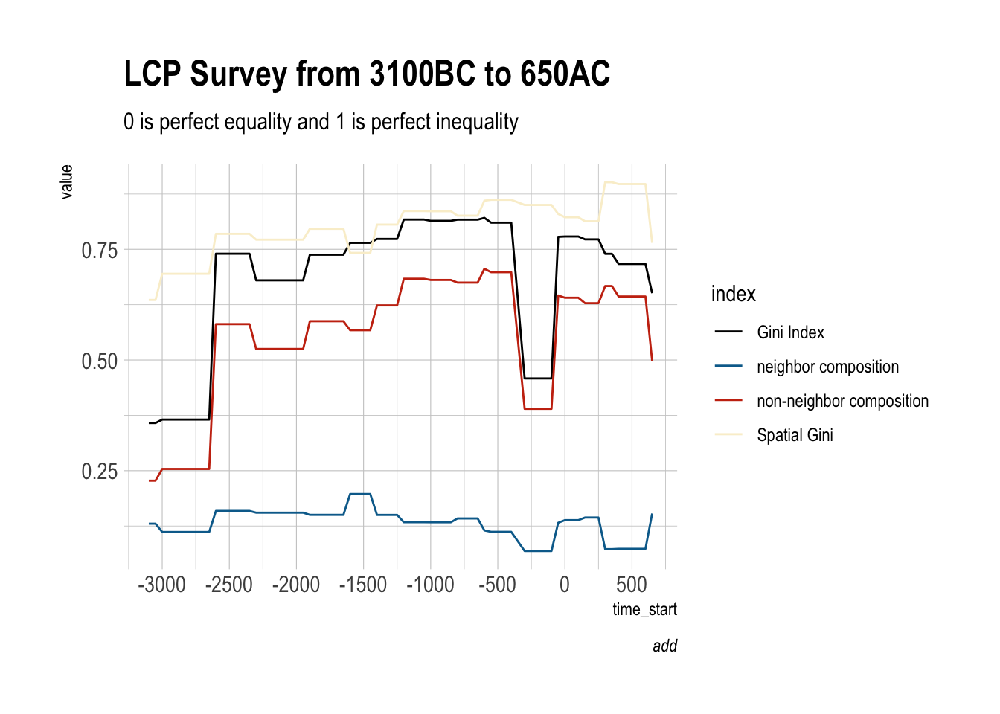
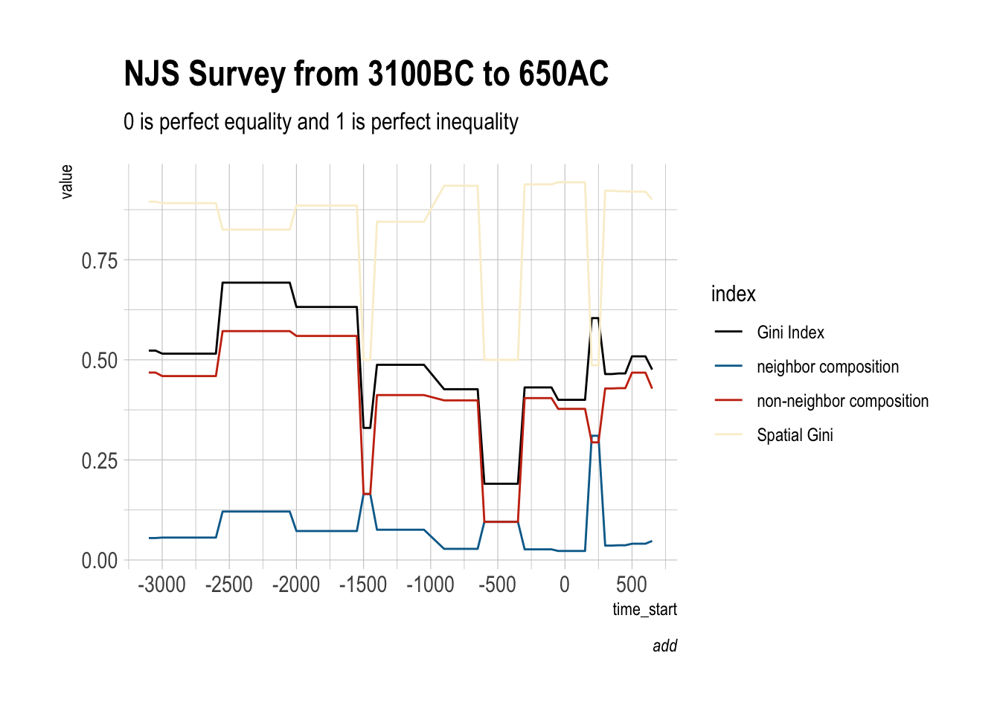

Code
library(sf)
library(dplyr)
library(tidyr)
library(sfdep)
library(ggplot2)
library(hrbrthemes)library(sf)
library(dplyr)
library(tidyr)
library(sfdep)
library(ggplot2)
library(hrbrthemes)# sites
sites = readRDS("../data/tab/njs_sites_LONG_SF.rds") %>% arrange(time_start)
# survey extent
survey = st_read("../data/vect/data.gpkg", layer = "njs_survey") %>% st_geometry()Reading layer `njs_survey' from data source
`/Users/michalmichalski/Documents/survey/data/vect/data.gpkg'
using driver `GPKG'
Simple feature collection with 1 feature and 5 fields
Geometry type: MULTIPOLYGON
Dimension: XY
Bounding box: xmin: 768522.9 ymin: 4056986 xmax: 809980.3 ymax: 4078026
Projected CRS: WGS 84 / UTM zone 37N# quick plot
plot(survey)
plot(sites$geometry, add = TRUE)
sites_list = split(sites, sites$time_start)
result = list()
for(i in 1:length(sites_list)){
voronoi <- sites_list[[i]] %>% # consider the master points
st_geometry() %>% # ... as geometry only (= throw away the data items)
st_union() %>% # unite them ...
st_voronoi() %>% # ... and perform the voronoi tessellation
st_collection_extract() %>% # select the polygons
st_sf(crs = 32637) %>% # set metric crs
st_join(sites_list[[i]]) %>% # & re-connect the data items
st_intersection(survey)
result[[i]] = voronoi
}sg_list = list()
nb_list = list()
for(i in 1:length(result)){
nb <- st_contiguity(result[[i]])
x <- result[[i]]$size_ha
sg = spatial_gini(x, nb)
sg_list[[i]] = sg
}
sg = do.call(rbind,sg_list)
sg$time_start = names(sites_list)
sg$time_start = as.numeric(sg$time_start)
head(sg) G NG NBG SG time_start
1 0.5230324 0.4681628 0.05486955 0.8950934 -3100
2 0.5230324 0.4681628 0.05486955 0.8950934 -3050
3 0.5154255 0.4594318 0.05599371 0.8913641 -3000
4 0.5154255 0.4594318 0.05599371 0.8913641 -2950
5 0.5154255 0.4594318 0.05599371 0.8913641 -2900
6 0.5154255 0.4594318 0.05599371 0.8913641 -2850sg_long = sg %>%
tidyr::pivot_longer(-time_start, names_to = "index", values_to = "value")
head(sg_long)# A tibble: 6 × 3
time_start index value
<dbl> <chr> <dbl>
1 -3100 G 0.523
2 -3100 NG 0.468
3 -3100 NBG 0.0549
4 -3100 SG 0.895
5 -3050 G 0.523
6 -3050 NG 0.468 Save
saveRDS(sg_long, "../data/tab/sp_gini_njs.rds")sg_long_lcp = readRDS("../data/tab/sp_gini_lcp.rds")
ggplot() +
geom_line(data = sg_long_lcp, mapping = aes(x = time_start, y = value, color = index)) +
#geom_point(data = sg_long, mapping = aes(x = time_start, y = value), color = "#999999") +
scale_color_manual( labels = c("Gini Index", "neighbor composition", "non-neighbor composition","Spatial Gini"),
values = c("#000000", "#046C9A", "#C93312", "#FAEFD1")) +
scale_x_continuous(n.breaks = 10) +
labs(title = "LCP Survey from 3100BC to 650AC",
subtitle = "0 is perfect equality and 1 is perfect inequality",
caption = "add"
) +
theme_ipsum()
sg_long_njs = readRDS("../data/tab/sp_gini_njs.rds")
ggplot() +
geom_line(data = sg_long_njs, mapping = aes(x = time_start, y = value, color = index)) +
#geom_point(data = sg_long, mapping = aes(x = time_start, y = value), color = "#999999") +
scale_color_manual( labels = c("Gini Index", "neighbor composition", "non-neighbor composition","Spatial Gini"),
values = c("#000000", "#046C9A", "#C93312", "#FAEFD1")) +
scale_x_continuous(n.breaks = 10) +
labs(title = "NJS Survey from 3100BC to 650AC",
subtitle = "0 is perfect equality and 1 is perfect inequality",
caption = "add"
) +
theme_ipsum()